Research Highlights
Selected projects across optical DNA mapping, biocondensate dynamics, and polymer physics in confinement.
Optical DNA Mapping
Optical DNA mapping visualises fluorescence-labelled, sequence-specific patterns — "barcodes" — along long DNA molecules. These barcodes carry signatures unique to the bacterial species from which the DNA originates.
Matching experimental barcodes to theoretical sequences in a database is hard because of noise from optics, photophysics, and stochastic chain motion. Our work builds realistic synthetic barcodes that incorporate each of these noise sources at the appropriate stage of the imaging pipeline:
(A) Multi-ligand binding mechanism (equilibrium)
Random sampling, via a Markov approach based on transfer matrices, of multiple ligands of different sizes and affinities binding the DNA molecule.
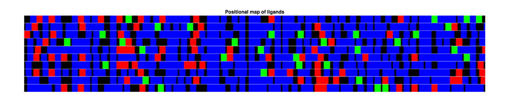
(B) Stochastic motion of DNA in the nanochannel (non-equilibrium)
Rouse-bead chain dynamics with parameters fitted from experimental kymographs.
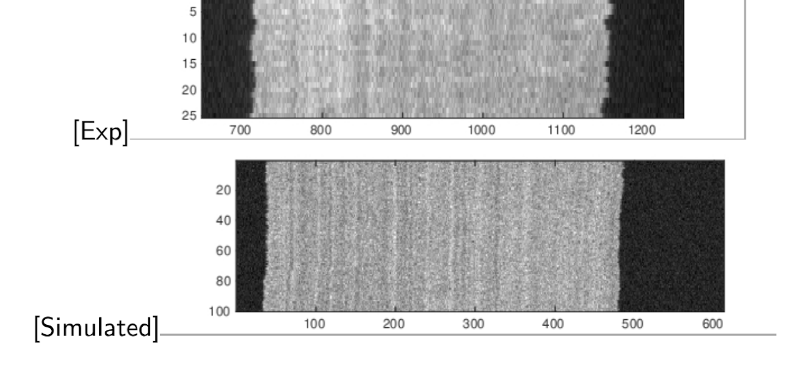
(C) Camera noise in the imaging process (photophysics)
Probabilistic modelling of fluorophore emitters on the chain together with appropriate sCMOS / EMCCD calibration — read noise, gain, and background estimation.
Articles
- D. Mohanta, A. Dvirnas and T. Ambjörnsson. Random sampling of ligand arrangements on a one-dimensional lattice. Phys. Rev. E 111, 014412 (2025). DOI
- D. Mohanta et al. Photophysical image analysis for sCMOS cameras: noise modelling and estimation of background parameters in fluorescence-microscopy images. PLOS ONE (2025). DOI
- Synthetic barcodes for accurate identification of bacterial species (in preparation).
Dynamics of biocondensates
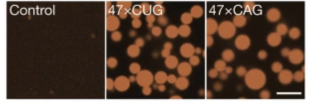
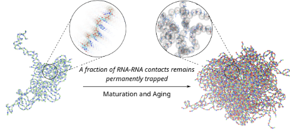
I currently study the material properties of CAG-repeat RNA droplets. While many RNA–protein complexes — particularly with intrinsically disordered proteins — show liquid-like behaviour, our question is whether pure RNA condensates follow the same trend or instead undergo aging. Since CAG-repeat expansions are central to several neurodegenerative diseases (Huntington's among them), the time-dependent material state of these condensates may be tied to onset and progression.
- D. Mohanta, H. Zhang, D. Thirumalai and H. Nguyen. Molecular origins of heterogeneous aging and spatial organization in RNA condensates. 2026 (under review).
I am also studying velocity-flow fields inside condensates, looking for correlations between sequence-dependent flow patterns and bulk material properties.
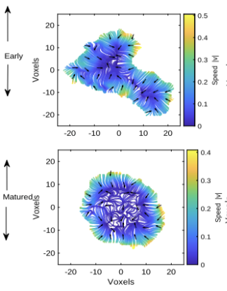
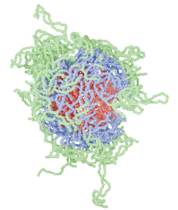
Polymer in confinement
Polymers are long, repetitive chains; the biological versions — DNA, RNA, protein — live inside crowded cells where volume exclusion among biomolecules creates an effective confinement that influences stability, dynamics, and function.
The interplay of entropy and energy drives a non-linear response in slit-like or well-like confinement. Theory predicts a critical width at which thermodynamic observables of the polymer reach a minimum. We explore non-monotonic responses of dsDNA to temperature and degree of confinement in equilibrium and quasi-equilibrium regimes.
Articles
- D. Mohanta, D. Giri and S. Kumar. Statistical mechanics of DNA melting in confined geometry. J. Stat. Mech. 043501 (2019). DOI
- D. Mohanta. Melting of confined DNA: static and dynamic properties. Soft Matter 18(14), 2790 (2022). DOI
- D. Mohanta, D. Giri and S. Kumar. Effect of solvent gradient on DNA confined in a strip. Physica A 562, 125379 (2021). DOI
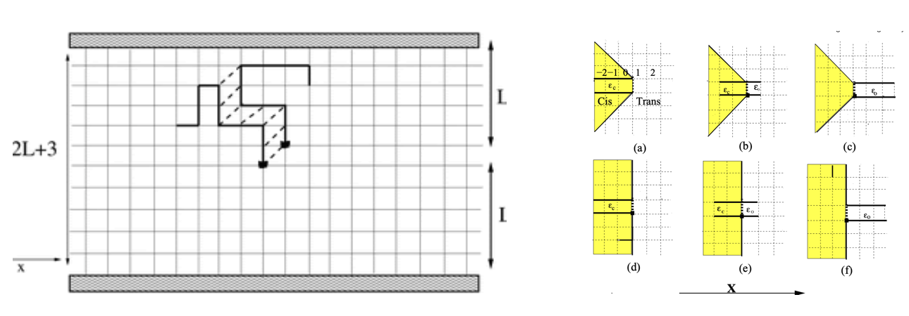
Quasi-equilibrium migration studies of polymer
Chemical gradients along migration axes can form globules on the poor-solvent side that act like ratchets, attracting segments from the good-solvent side. When a solvent or dielectric gradient is introduced transverse to a nanopore, the polymer's migration becomes non-monotonic in the gradient strength. In the quasi-static regime — where each migration step is long compared to polymer relaxation — a Fokker–Planck description captures the migration time.
- D. Mohanta, D. Giri and S. Kumar. Effect of solvent gradient inside the entropic trap on polymer migration. Phys. Rev. E 105, 024135 (2022). DOI
- D. Mohanta. DNA migration through semi-circular gradient channel. Physica A 588, 126573 (2022). DOI
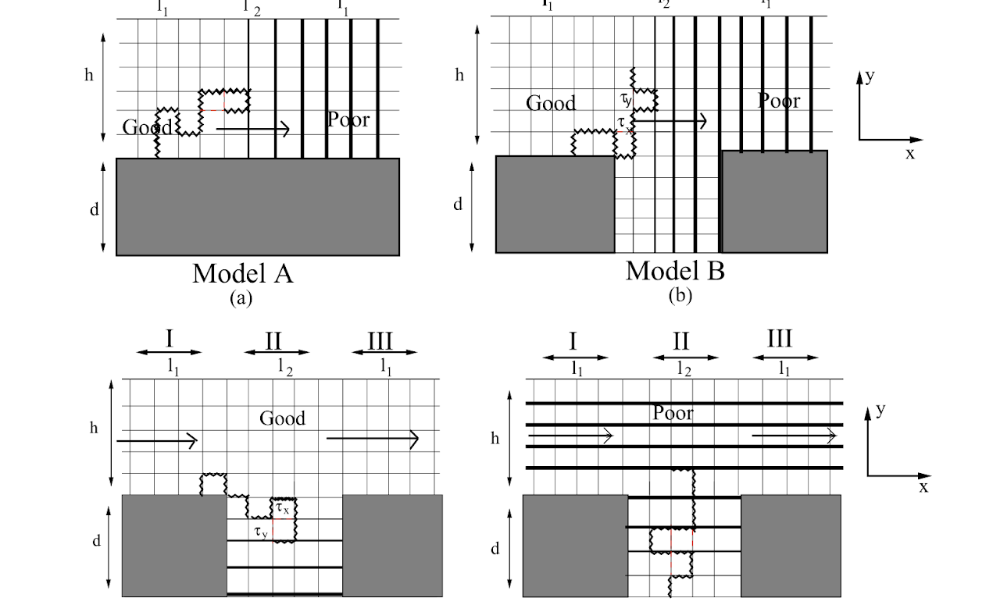
Polymer adsorption
We study force-induced melting of dsDNA on a square lattice with varying surface interactions. Depending on force and temperature, the chain exhibits adsorption / desorption, zipping / unzipping, and melting transitions. This minimal model captures the discontinuous nature of unzipping transitions and re-entrance phenomena, with the goal of mapping out adsorption states under varying thermodynamic conditions.
- D. Mohanta, D. Giri and S. Kumar. Force-induced DNA melting in the presence of an attractive surface. Soft Matter 19(29), 5477–5486 (2023). DOI
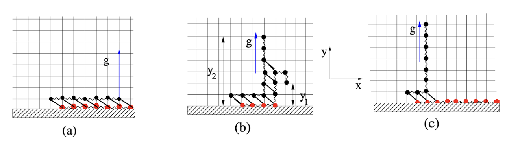
Segregation of polymers
Polymer interactions in strong confinement, in the presence of solvent, span two energetic regimes — inter-polymer and intra-polymer attractions — and lead to multiple phase transitions. Motivated by epigenetic-transition-led collapse, we probe polymer organisation in symmetric and asymmetric confinement. Asymmetric confinement can trap polymers in poor solvents through large free-energy barriers. For heteropolymers (block co-polymers) we are studying segregation dynamics under strong confinement.
- D. Mohanta. Solvent effect on equilibrium organization of confined polymers. Soft Matter 19, 4991 (2023). DOI
- D. Mohanta, M. Dwivedi, D. Giri. Segregation of strongly confined block-copolymers. bioRxiv (2024). DOI
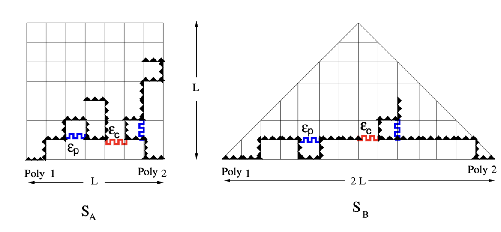
Sequence dependence on polymer association
The molecular grammar of sequence patterning governs how polymers organise under confinement. Quantifying complexity via Shannon entropy, we show that the spatial arrangement of interaction motifs — not merely their composition — determines whether polymers self-fold into isolated globules or intermix to form networked, condensate-like states. The framework bridges polymer physics and biological phase separation: geometric confinement and sequence heterogeneity together control transitions between mixed and segregated ensembles.
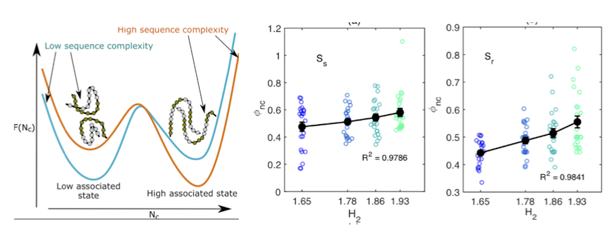
- D. Mohanta, M. Dwivedi, H. Maity, and D. Giri. Sequence complexity dictates polymer mixing. bioRxiv (2025). DOI
Other research interests
- Magnetic polymer studies. Chromosome folding through epigenetic shifts; beads as nucleosomes, spins as predominant epigenetic marks, producing "epigenetic domains" that mimic chromatin organisation.
- Loop extrusion. Cohesin organises chromatin into loops and topologically associating domains, halting at CTCF-bound anchor sequences.
- Melting studies of CpG islands. Roughly 28,000 CpG-rich regions of 200–3,000 bp in the human genome can be methylated; high-resolution melting analysis distinguishes methylated samples. We are building a theoretical foundation for melting of different CpG islands using a Poland–Scheraga framework.
- Reinforcement learning. Polymer collapse studied through an RL approach.
- Non-reciprocal Ising interactions. How non-reciprocal couplings (Jij ≠ Jji) alter polymer association and segregation.